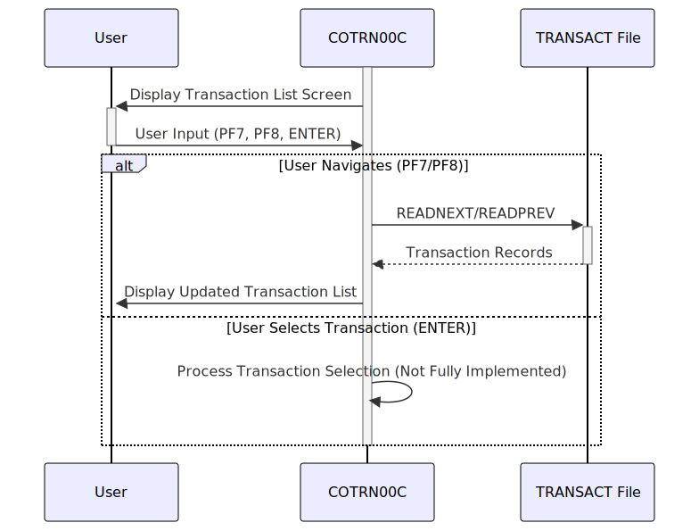

Gerado em: 1 de outubro de 2024
Título do Documento: Módulo de Listagem de Transações CardDemo
Descrição Resumida:
O Módulo de Listagem de Transações CardDemo permite que os usuários visualizem uma lista paginada de suas transações de cartão de crédito. Os usuários podem navegar pelas páginas de transações e potencialmente selecionar uma transação para uma visualização detalhada (embora a funcionalidade de visualização detalhada não esteja totalmente implementada no código fornecido). O módulo recupera dados de transações do arquivo VSAM TRANSACT.
Histórias do Usuário:
Como titular de um cartão de crédito, quero poder visualizar uma lista de minhas transações anteriores para poder acompanhar meus gastos e a atividade da minha conta.
Épico Relacionado: 4 - Processamento de Transações
Requisitos Técnicos:
- Recuperação de Dados de Transações e Paginação:
- O programa
COTRN00C recupera registros de transações do arquivo VSAM TRANSACT.
- O programa permite paginação, exibindo no máximo
10 transações por página.
- Navegação: Os usuários podem mover-se entre as páginas usando as teclas
PF7 (Página para Cima) e PF8 (Página para Baixo).
- Seleção de Transação:
- O programa permite que os usuários tentem selecionar uma transação usando a tecla
ENTER.
- No entanto, a ação subsequente (presumivelmente navegando para uma visualização detalhada da transação) não está totalmente implementada no código fornecido.
- Interação com a Tela:
- O programa interage com o usuário por meio de uma tela gerenciada pelo CICS (conjunto de mapas
COTRN0A).
- Exibição de Dados:
- A tela exibe os seguintes detalhes da transação:
TRAN-ID: ID da transaçãoTRAN-ORIG-TS: Timestamp da transação (formatado como MM/DD/YY)TRAN-DESC: Descrição da transaçãoTRAN-AMT: Valor da transação
- Entrada do Usuário:
- O programa aceita entrada do usuário para navegação (PF7, PF8) e seleção de transação (ENTER).
- O programa valida a entrada do usuário para garantir que apenas as teclas válidas sejam processadas.
- Tratamento de Erros:
- O programa inclui tratamento de erros básico para cenários como:
- Atingir o início ou o fim do histórico de transações.
- Entrada de usuário inválida (por exemplo, ID de transação não numérico).
- Erros encontrados durante o acesso ao arquivo VSAM.
- As mensagens de erro são exibidas ao usuário por meio da tela.
Modelos Relacionados:
TRAN-RECORD: Representa um único registro de transação.
TRAN-ID: ID da transação (presumido como um identificador exclusivo)TRAN-ORIG-TS: Timestamp da transaçãoTRAN-DESC: Descrição da transaçãoTRAN-AMT: Valor da transação
Configurações:
WS-TRANSACT-FILE: Nome do arquivo do arquivo VSAM TRANSACT (TRANSACT).
Melhorias de Código:
- Visualização Detalhada da Transação: Implemente a funcionalidade para exibir informações detalhadas sobre uma transação selecionada.
- Funcionalidade de Pesquisa/Filtro: Permitir que os usuários pesquisem transações com base em critérios específicos (por exemplo, intervalo de datas, valor).
- Tratamento de Erros Aprimorado:
- Implementar um mecanismo de tratamento de erros mais robusto, potencialmente usando um sistema centralizado de registro de erros.
- Fornecer mensagens de erro mais informativas ao usuário, incluindo soluções potenciais.
- Documentação de Código: Melhorar a legibilidade e a manutenção do código adicionando comentários para explicar a lógica complexa e as estruturas de dados.
- Consideração para Modernização: Explorar opções para modernizar a interface do usuário, potencialmente migrando de uma tela CICS para uma interface baseada na web.
Melhorias de Segurança:
- Autenticação e Autorização:
- Implementar mecanismos de autenticação robustos para verificar as identidades dos usuários antes de conceder acesso aos dados de transações.
- Implementar verificações de autorização para garantir que os usuários só possam visualizar transações associadas às suas contas.
- Criptografia de Dados: Criptografar dados confidenciais, como valores de transações e números de contas, para protegê-los de acesso não autorizado.
- Registro de Auditoria: Registrar todas as ações do usuário, incluindo visualização e navegação de transações, para fins de auditoria e monitoramento de segurança.
Diagrama Conceitual:

–Made by “Smart Engineering” (by Compass.UOL)–